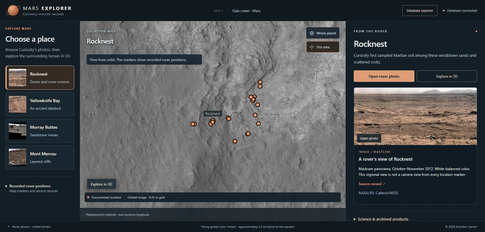

NASA archive records
Curiosity rover locations, PDS products, orbital elevation/imagery and science records.
GEOG 391 / Team project / GIS Day preparation
Our five-person GEOG 391 team connects NASA Curiosity records, orbital terrain and imagery, and science observations in a bounded Gale Crater exploration prototype.



Curiosity rover locations, PDS products, orbital elevation/imagery and science records.
A 41-table PostGIS database, terrain preparation, FastAPI service and CesiumJS interface.
Linked site views and source records; our team is preparing an upcoming Texas A&M GIS Day presentation.
I am a member of the five-person GEOG 391 team and am responsible for preparing and presenting portions of the project for our upcoming Texas A&M GIS Day presentation. My contribution here is presentation preparation and communication of the project’s purpose, data relationships and limits.
The team is Brandon Santor, Cashden Clayton, Ethan Cagwin, Ethan DeMelo and Daniel Zhang.
Brandon Santor is Team Lead and Primary Architect/Developer. He conceptualized the project and built its 41-table PostgreSQL/PostGIS database, Python/NumPy/Rasterio/GDAL terrain pipeline, FastAPI service and CesiumJS 3D interface. Those development accomplishments are credited to Brandon.
Read Brandon’s technical case study ↗The project links NASA Planetary Data System Curiosity archives, orbital elevation and imagery, rover photographs and science records at selected Gale Crater sites. The database preserves source identities and relationships rather than leaving visitors to move among disconnected archives.
Our presentation preparation distinguishes implemented prototype behavior, dated test evidence, proposal commitments and open work. I am preparing to explain those distinctions clearly rather than claiming responsibility for backend or terrain development.
The 3D terrain is reconstructed from orbital data; rover photographs are flat contextual images. The prototype is bounded to selected locations, not a full walkable model of Mars or a calibrated ground-level rover simulation.
Source coordinate frames, observation dates and reported precision remain distinct. An orbital sample spacing is not a measure of absolute location accuracy. These are descriptions from the team guide and Brandon’s October 2026 technical case study, not a fresh independent reproduction by me.
Shared-team visuals and implementation description: Brandon Santor, Mars Explorer technical case study (accessed October 22, 2026). Team context: retained presentation preparation guide. Screenshots are used here specifically for our shared project, with developer and NASA imagery attribution preserved.